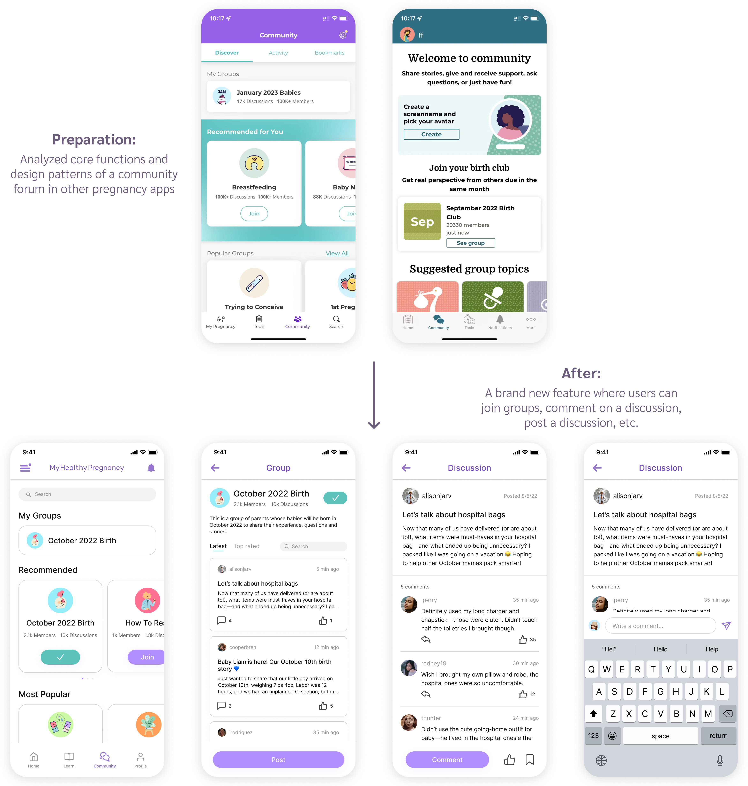

MyHealthyPregnancy Redesign
Timeline
10 weeks
My role
UX researcher, UI/UX designer
Tools
Figma, Maze
Background
MyHealthyPregnancy is an app that provides timely risk
identification and intervention during pregnancy.
My task
was to do user research on current users and iterate the design
based on feedback.
Competitive Analysis
Before I started user research, I first analyzed 3 most popular pregnancy apps to find out common features and layouts.

Among all features, size guide and social network feature were not only the most common ones, but also frequently mentioned in user interviews. This suggested that users really cared these two features, and they definitely should be added into the app.
User Research
Methods:
Online survey sent to 140 active users, received 87 responses: general questions about what areas of the app they use most often, and what areas of the app they find most helpful/annoying
15-min phone call interview on 8 active users: based on answers to the general questions, discuss further using open-ended questions to gain in-depth insight
I incorporated the insights into two personas:

Based on survey results and interviews, the main user pain points can be summarized as:
1. Check-ins are too frequent and are not customizable
2. Weight tracker is hard to use (only track once a week + can't
edit past information)
3. Want a commodity forum to chat with other users
4. On the home screen:
a. Not much information on baby's change
b. Too few visuals makes the app look boring than other apps
c. Need a size guide
d. Need daily pregnency tips
Solution

Wireframes

Final Design
01. Check-ins are too frequent

02. Weight Tracker is hard to use

03. Want a community forum
04. Home screen - more baby information, visuals, size guide, and daily tips
Usability Testing
After finishing the design, I conducted unmoderated usability testing on 6 active users using Maze.
Questions:
- Find your body's changes
- Edit your past weight information on 08/23/22
- Comment on the latest discussion in the "October 2022 Birth" group in the community forum
- Do you find the tasks easy to complete?
- Any additional feedback?


According to the feedback, it seemed like users were pretty satisfied with this new design.
Reflection
One month before this internship started, I knew nothing about
UI/UX, not to mention how to use Figma. In four weeks, I managed to
self study UI design principles and UX design process from online
resources, and gradually became familiar with Figma.
It was a great experience to collaborate with data analyst and UX
researcher in the team. I got to know how to write interview script
so that users would be willing to provide honest feedback, and also
got the chance to analyze qualitative and quantitative data from
survey results. Being able to incorporate user feedback into design
and conduct unmoderated usability testing were brand new experiences
for me. The feeling of being connected with users through my design
was so exciting.
Since the company was very small (only 7 people), I also took on the
role of debugging the app and reviewing the logic document, which
spent a lot of time. Therefore, I wasn't able to come up with
multiple iterations for usability testing. In the future, I will try
to iterate as much as I can to create and test more design ideas.
Overall, I was very proud of my first UX design project!😊